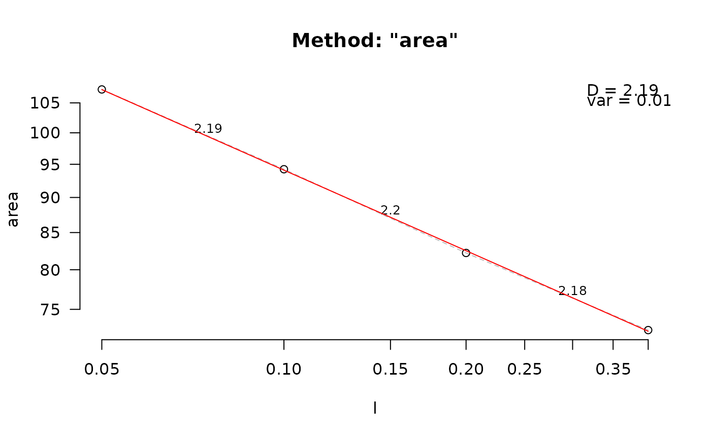

Calculate fractal dimension using the surface area method
Arguments
- data
DEM of class "RasterLayer" or mesh of class "mesh3d".
- lvec
Vector of scales to use for calculation.
- keep_data
Logical. Keep data? Default is FALSE.
- plot
Logical. Plot surface with area resolutions superimposed? Defaults to FALSE.
- scale
Logical. Rescale height values to fit the extent? Only relevant for DEMs. Defaults to FALSE.
Details
This function calculates fractal dimension using the area method.
Based on values in lvec, the DEM or mesh is reprojected to varying scales.
Fractal dimension is defined as 2 - s with s being the slope of the regression between the log-transformed surface areas across scales and the log-transformed scales.
Considerate bias is introduced if scales approach the extent of the object due to an edge effect.
Therefore, this approach is only appropriate when the object is large relative to the scales of interest to be used as lvec.
Diagnostic plots may help visualize whether bias is present for the scales chosen (i.e. points do not fall on a straight line).
Examples
fd_area(horseshoe, lvec = c(0.125, 0.25, 0.5))
#> [1] 2.127229
# Look at diagnostic plot
fdata <- fd_area(horseshoe, lvec = c(0.05, 0.1, 0.2, 0.4), keep_data = TRUE)
fd_diagnose(fdata)

#> $D
#> [1] 2.189408
#>
#> $data
#> l area
#> 1 0.05 107.32345
#> 2 0.10 94.23786
#> 3 0.20 82.22055
#> 4 0.40 72.50778
#>
#> $lvec
#> [1] 0.05 0.10 0.20 0.40
#>
#> $D_vec
#> [1] 2.187587 2.196808 2.181363
#>
#> $var
#> [1] 0.007770556
#>
#> $method
#> [1] "area"
#>
# points fall on straight line
fdata <- fd_area(horseshoe, lvec = c(0.5, 1, 2, 4), keep_data = TRUE)
fd_diagnose(fdata)
#> $D
#> [1] 2.046692
#>
#> $data
#> l area
#> 1 0.5 70.74935
#> 2 1.0 66.44751
#> 3 2.0 64.52862
#> 4 4.0 64.13748
#>
#> $lvec
#> [1] 0.5 1.0 2.0 4.0
#>
#> $D_vec
#> [1] 2.090502 2.042276 2.008772
#>
#> $var
#> [1] 0.04108556
#>
#> $method
#> [1] "area"
#>
# points fall on hollow curve, indicating that lvec includes values that
# are too high.